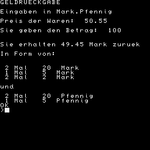

2bc0 2e3d 0000 B ...
KASSE 5! GELDRUECKGABEBERECHNUNG
10 CLS:CLEAR:PRINT "GELDRUECKGABE":PRINT
20 PRINT "Eingaben in Mark.Pfennig"
30 PRINT:INPUT "Preis der Waren: ";P
40 PRINT:INPUT "Sie geben den Betrag: ";B
50 PRINT:PRINT
60 D=B-P:IF D=0 THEN 210
70 PRINT "Sie erhalten"; D; "Mark zuruek"
80 PRINT:PRINT "In Form von:":PRINT:PRINT
90 READ W
100 N=INT((D/W*100+.5)/100):IF N=0 THEN 130
110 PRINT N;"Mal ";W;" Mark"
120 D=D-N*W:IF D=0 THEN 250
130 IF W>1 THEN 90
140 D=D*100:PRINT:PRINT "und":PRINT
150 READ W
160 N=INT((D/W*100+.5)/100):IF N=0 THEN 190
170 PRINT N;"Mal ";W;" Pfennig"
180 D=D-N*W:IF D=0 THEN 250
190 IF W>1 THEN 150
200 GOTO 250
210 PRINT "Sie erhalten kein Geld zurueck"
220 GOTO 250
230 DATA 50,20,10,5,2,1
240 DATA 50,20,10,5,1
250 END